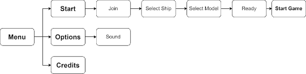
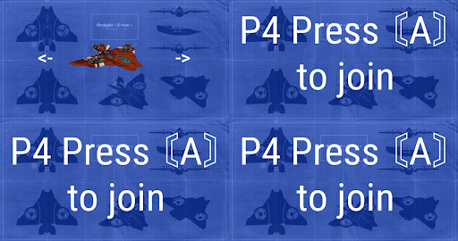
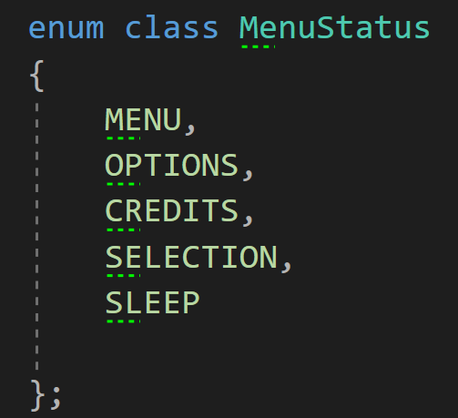
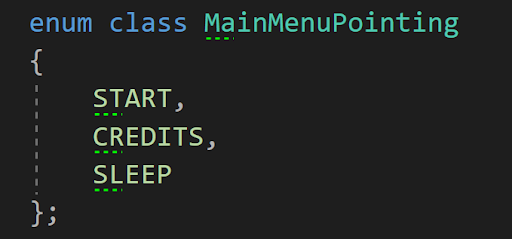
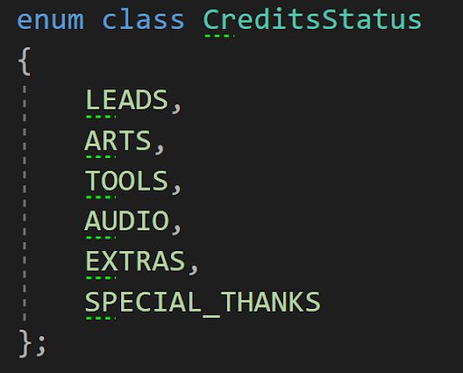
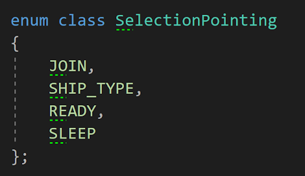
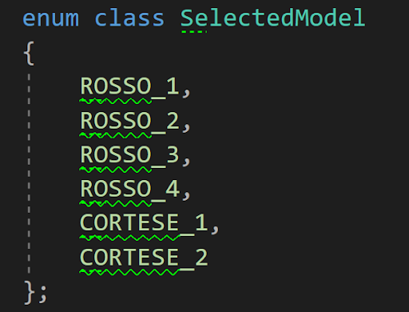

Context
We developed a video game project during our third year of bachelor at SAE Institute of Geneva in Games Programming. Our objective was to create a racing game for the Nintendo Switch, using a custom Game Engine in C++ developed by our teacher and by us. Our game "AerRacers" is a multiplayer pod racing game, where each player controls the rotors of their spaceship with the joysticks.
Problem
In video games, it's very important to manage game status. That's why games have menus and game managers. In our game, we have 2 different ship models each with different textures. It was important to let players choose their ship, join the game, and manage the game status to let players win and return to the menu. To do so, I created a Menu Manager and a Game Manager.
Menu Structure

The menu has several sections:
- Main Menu: Where the player can look at the credits or start the game
- Credits: Where the credits of each team member are displayed
- Selection Screen: Where players can join the game and select their spaceship skin
Selection Screen

The Selection Screen was important because there's a bunch of spaceship models & textures created by the Game Art team. It's also where the Game Manager gets information about which ship model to load and how many players will play.
Enum Classes
To update the state of the menu, I created several enum classes:
MenuStatus: Used to know which part of the menu the player is in.

MainMenuPointer: Used to know which button is highlighted.

CreditsStatus: Used to know which credits page the player is viewing.

SelectionStatus: Used to know which part of selection each player is in.

SelectedModel: Used to know which model the player has selected.

Loading System
We decided to load every texture and model at game start using other threads of the Nintendo Switch. Since we only have one level, the level loads while the player is in the main menu. However, a problem occurred: the level loaded faster than the menu, displaying chunks before the game manager. We reorganized the loading order:
- Menu UI Loading
- Scene Models and Textures Loading
- Spaceships and InGame UI Loading (only when game starts)
Game Manager
The game manager manages the entire game. It updates the current game status, updates the UI for each player, and checks which player has finished.
Game Manager States
The Game Manager uses an enum class called GameState:
- Waiting: Countdown before the start of the game
- Racing: When the players are racing
- End: Displays the end score then loads the main menu
To know if each player has finished the race, the Game Manager gets information from the Waypoint Manager.
Problems Encountered
Keeping Lazy Work for Later
I wanted to get a working system as fast as possible and then switch to another system instead of finishing lazy work like code polishing and writing credits text. This caused several problems:
- Code was working but not clean
- Missing lazy tasks accumulated and cost more time later
- Unclean code + missing tasks created organizational problems
What I Learned
The development of the Menu and Game Management wasn't really hard to implement. When you have a precise idea of what you'd like to do and how, it's not very hard to implement a working system. The harder part of programming is knowing what you do and organizing your code well. Otherwise, you could get lost and lose more time than if you solved problems when they were fresh in your head.